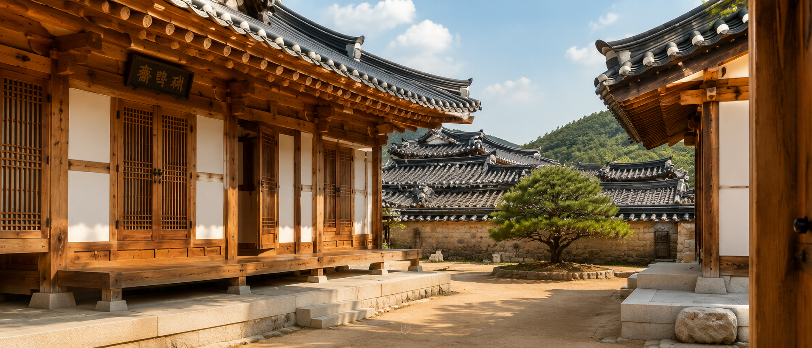
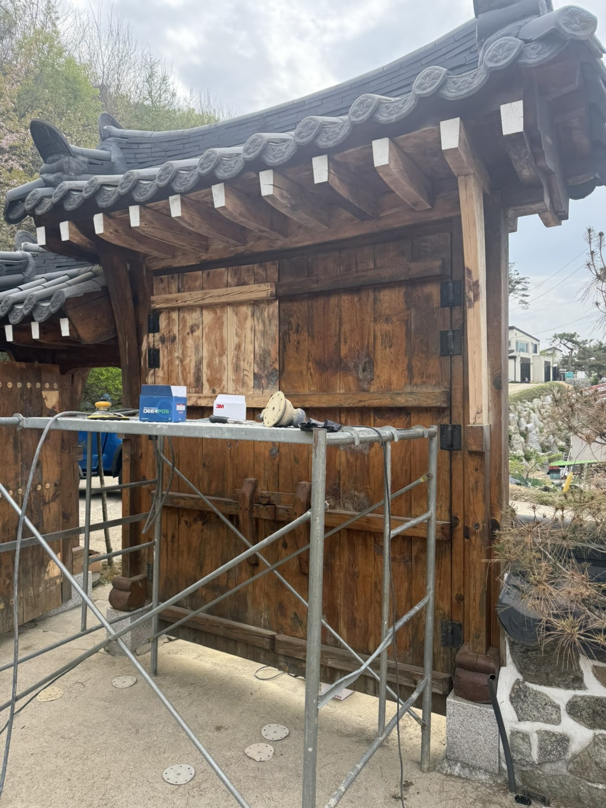
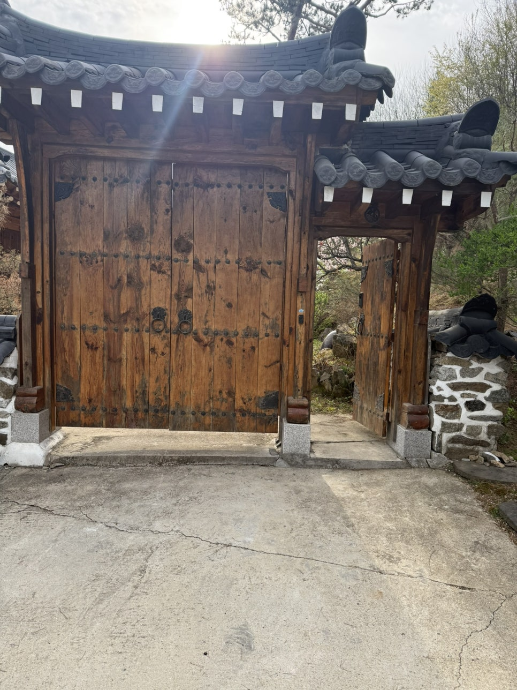
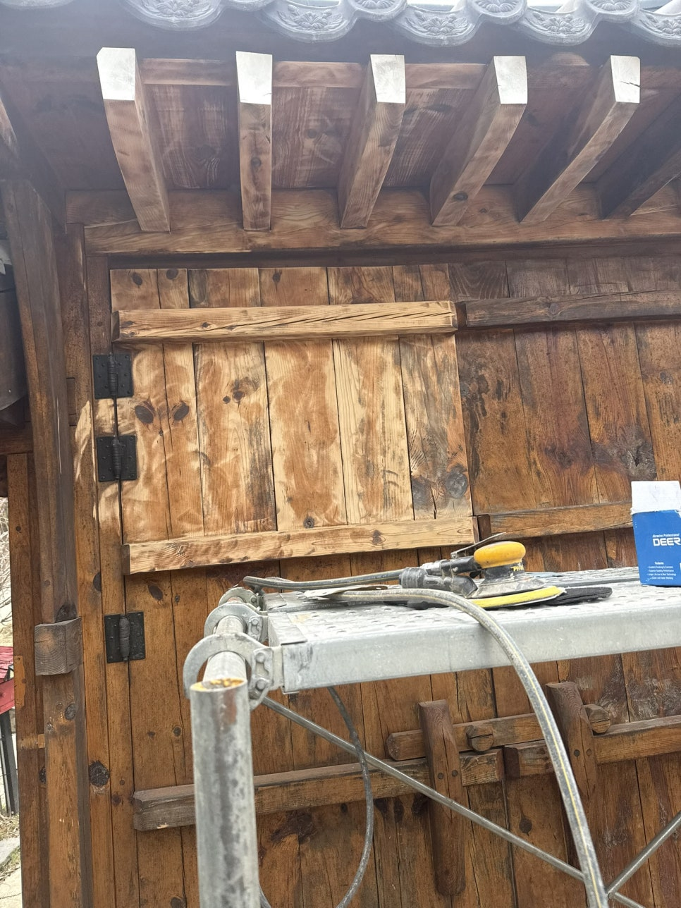
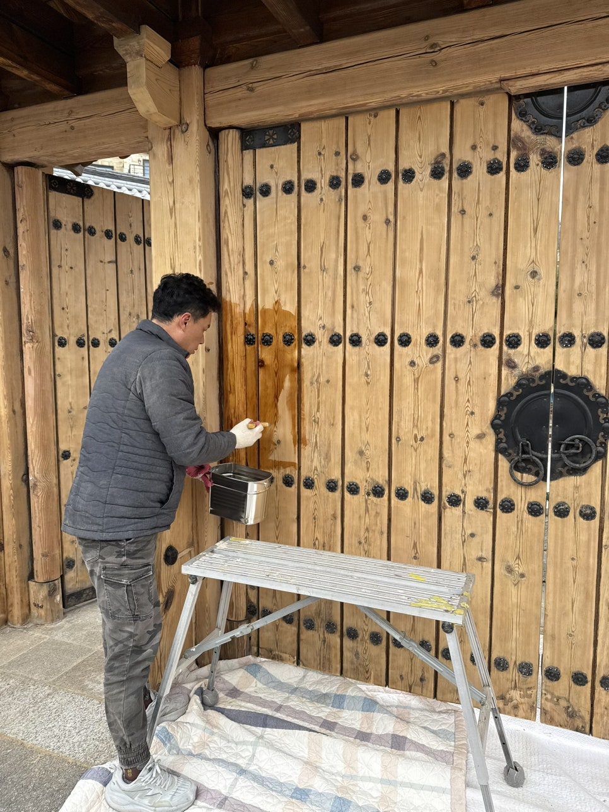
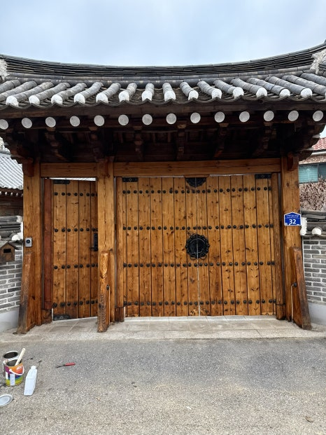
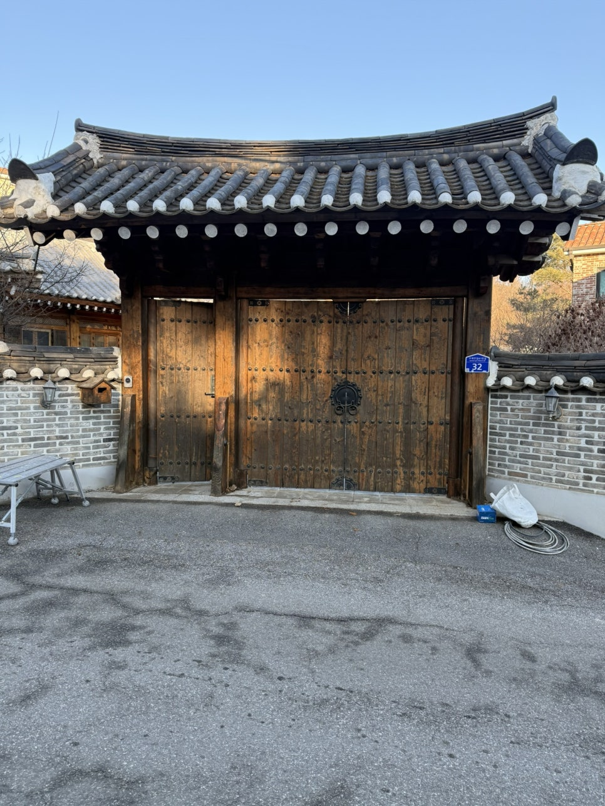
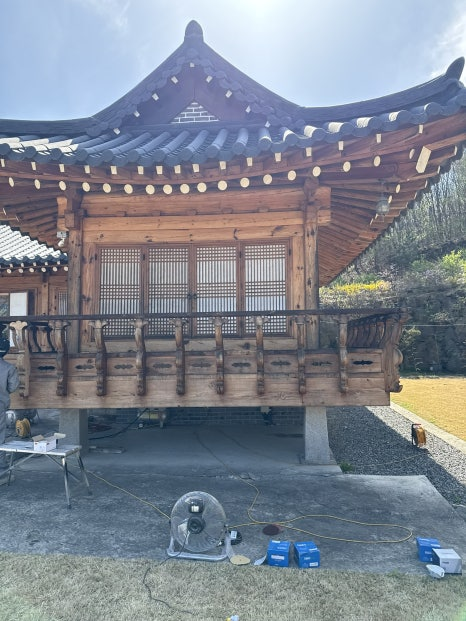
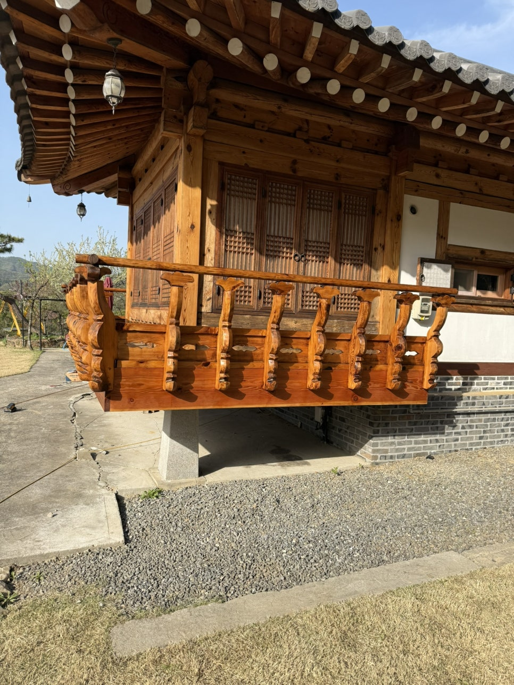

한옥복원 · 목재연마 · 오일스테인 전문
한옥복원·오일스테인 전문,
나무의 결을 되살려 한옥의 시간을 잇습니다
오랜 세월 상한 목재를 연마하고, 친환경 오일스테인으로 마감해
본래의 아름다움을 복원합니다.
ABOUT
전통과 정성으로 완성하는
한옥 복원 전문업체
한옥복원오일스테인은 한옥의 목재 구조를 이해하고, 세월이 남긴 흔적을 존중하며 복원하는 전문 시공업체입니다. 무리한 교체보다 연마와 오일스테인 마감을 통해 원목 본연의 결과 색을 되살리는 방식을 우선합니다. 경기 수원을 기반으로 전국 출장 시공을 진행하고 있습니다.
전통의 가치 존중
한옥의 구조와 고유한 결을 이해하여 전통의 가치를 존중합니다.
연마와 오일스테인 마감
무리한 교체 없이 연마와 오일스테인 마감으로 원목 본연의 아름다움을 되살립니다.
전국 출장 시공
경기 수원을 기반으로 전국 어디든 출장 시공이 가능합니다.
전문성과 책임 시공
풍부한 경험과 노하우로 꼼꼼하고 책임감 있는 시공을 약속드립니다.




“나무의 결을 되살려
한옥의 시간을 잇습니다.”
SERVICE
시공 서비스
한옥복원
기둥, 보, 서까래 등 한옥 구조목의 손상 부위를 진단하고 원형에 가깝게 복원합니다. 전통 기법과 현대 자재를 함께 활용해 구조적 안전성과 미관을 동시에 확보합니다.
오일스테인
친환경 오일스테인으로 목재에 깊이 있는 색감과 방수·방충 기능을 더합니다. 인체에 무해한 자재를 사용해 실내에서도 안심하고 시공할 수 있습니다.
사진 클릭 시 양평 용문산 한옥 대문 시공과정을 확인할 수 있습니다.
WHY US
한옥복원오일스테인을 선택하는 이유
전통의 가치를 지키는 전문성, 친환경 자재, 책임 있는 시공
10년+
전문 시공 경력
10년 이상 한옥 복원 시공 경험을 갖춘 전문 인력이 직접 시공하여 완성도 높은 결과를 약속드립니다.
친환경 자재
인체에 무해한 오일 사용
인체에 무해한 친환경 오일스테인으로 방수·방충 효과는 물론 실내에서도 안심하고 사용 가능합니다.
전국 출장 시공
어디든 빠르게 방문
경기 수원 본사를 기반으로 전국 어디든 신속히 방문하여 상담부터 시공까지 책임집니다.
사후 관리 지원
시공 후에도 안심
시공 이후 목재 상태 점검과 유지보수 상담을 통해 오래도록 아름다움을 지켜드립니다.


WORKS
시공사례
실제 시공 전/후 비교로 한옥복원오일스테인의 작업을 확인해 보세요.
양평 용문산 한옥 대문 오일스테인
경기 양평 용문산 소재 한옥 솟을대문. 오랜 세월 빛바랜 목재 표면을 연마하고 친환경 오일스테인으로 마감해 원목 본연의 결과 색감을 되살렸습니다.

BEFORE한옥 대문 복원
낡고 변색된 한옥 솟을대문을 연마·복원하고 오일스테인으로 마감했습니다. 구조는 그대로 살리면서 원목 본연의 밝고 따뜻한 색감을 되찾은 사례입니다.

BEFORE
AFTER한옥 누각 난간 목재 색감 복원
오랜 세월 햇빛과 비바람에 회색빛으로 바랜 누각 난간을 정밀 연마하고 오일스테인으로 마감해, 화려한 조각의 결과 원목 본연의 따뜻한 색감을 되살렸습니다.
시공과정 · 오일스테인
양평 용문산 한옥 대문 오일스테인 시공과정
오랜 세월 자외선과 비바람에 표면이 변색되고 갈라진 대문 상태를 점검합니다. 목재 손상 정도를 확인해 연마 강도와 오일스테인 시공 범위를 결정합니다.
안전한 고소 작업을 위해 비계를 설치하고, 샌딩기와 연마재를 준비해 목재 표면 전체를 고르게 작업할 수 있도록 세팅합니다.
변색·오염된 표면을 단계별 샌딩으로 매끄럽게 다듬어 나무 본연의 결을 드러냅니다. 이후 오일스테인의 흡착력과 발색을 높이는 핵심 과정입니다.
친환경 오일스테인을 여러 겹 도포해 깊이 있는 색감과 방수·방충 기능을 더하고, 대문 본래의 아름다움을 되살려 시공을 마무리합니다.